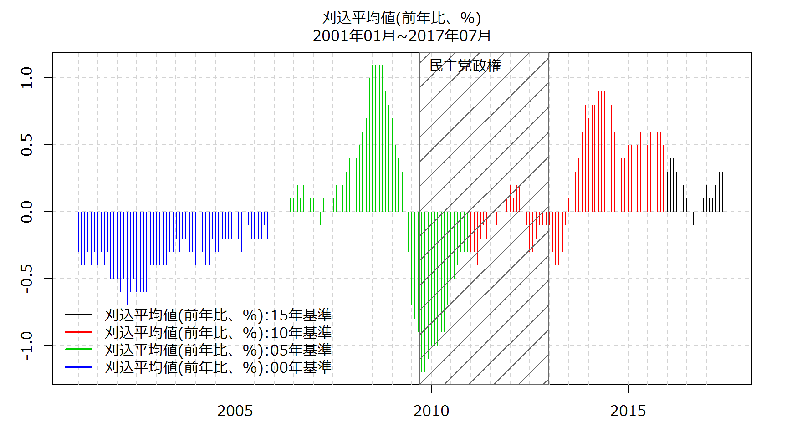
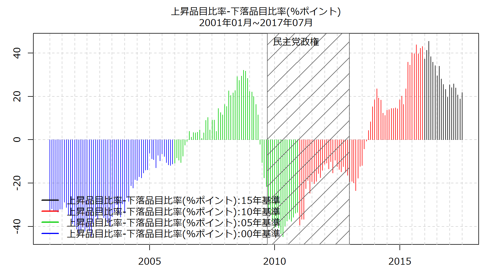
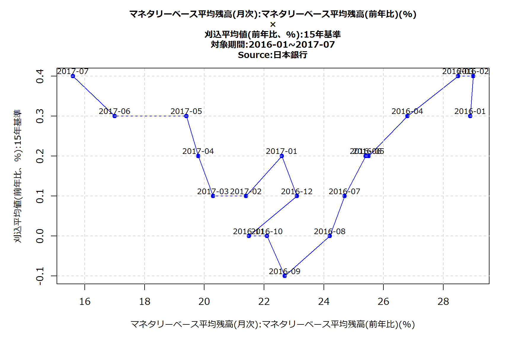
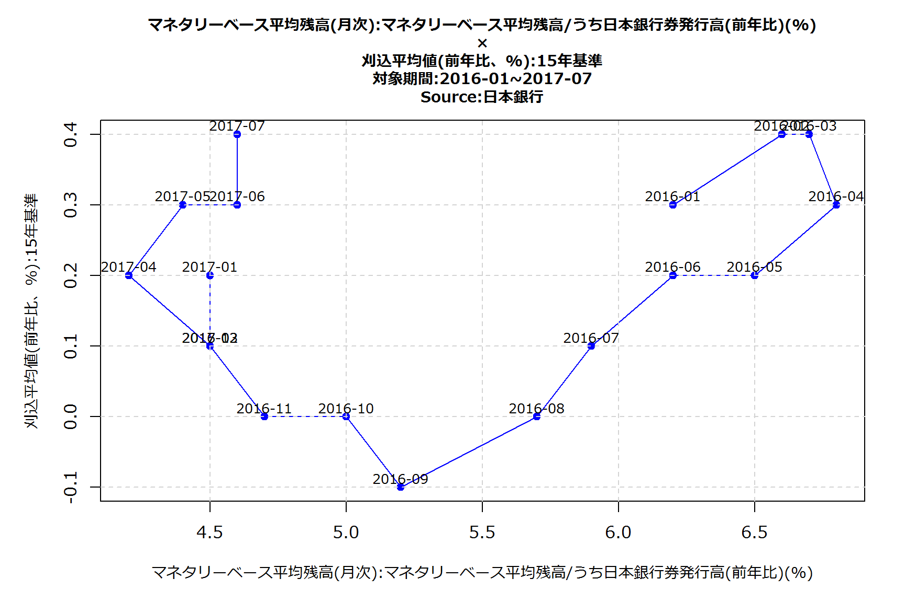
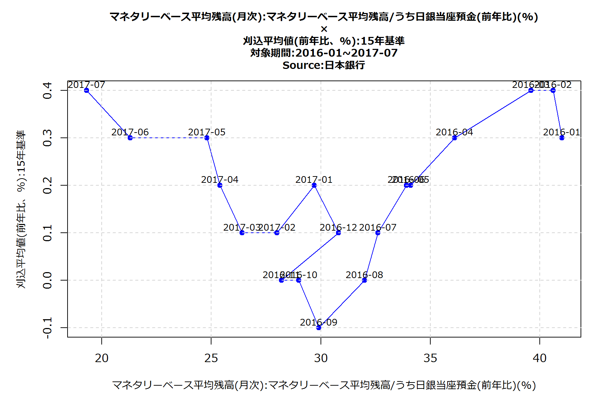

| Item | 2017年01月 | 2017年02月 | 2017年03月 | 2017年04月 | 2017年05月 |
|---|---|---|---|---|---|
| 刈込平均値(前年比、%):15年基準 | 0.2 | 0.1 | 0.1 | 0.2 | 0.3 |
| 加重中央値(前年比、%):15年基準 | 0 | 0 | 0 | 0 | 0 |
| 最頻値(前年比、%):15年基準 | 0.3 | 0.3 | 0.3 | 0.3 | 0.2 |
| 上昇品目比率(%):15年基準 | 59.1 | 58.5 | 59.3 | 57.9 | 56.2 |
| 下落品目比率(%):15年基準 | 33.7 | 34.4 | 33.5 | 34 | 35.6 |
| 上昇品目比率-下落品目比率(%ポイント):15年基準 | 25.4 | 24.1 | 25.8 | 23.9 | 20.7 |


